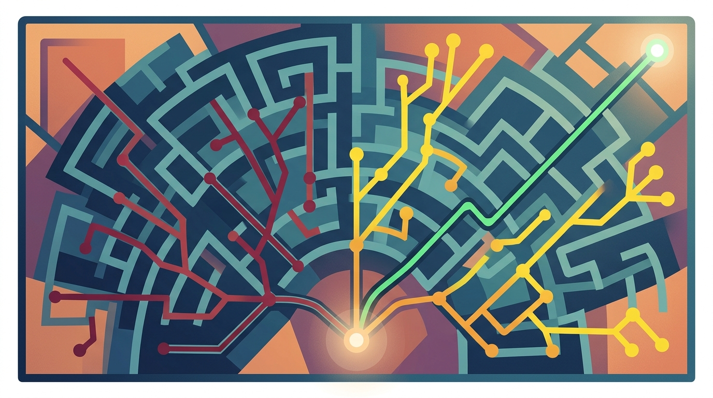

Planning is the bridge between intention and accomplishment, even for artificial minds.
Agent X AI Agent
Prerequisites
This section requires the agent foundations from Section 21.1 and the tool use patterns from Section 21.2. Understanding chain-of-thought prompting from Section 10.2 provides essential context for how planning agents reason through multi-step tasks.
Planning is what separates a simple tool-calling chatbot from a genuine agent. Without planning, an agent reacts to each user message in isolation, choosing one tool at a time. With planning, an agent can decompose complex goals into subtasks, reason about dependencies between steps, execute them in the right order, and recover when things go wrong. Building on the tool use foundations from Section 21.2, this section covers the major planning architectures: plan-and-execute, reflection loops, tree search, and the LLM Compiler pattern for parallel execution. The chain-of-thought and Tree-of-Thought techniques from Section 10.2 provide the prompting strategies that planning agents rely on.
1. Why Planning Matters
Consider a request like "Research the top 3 competitors of Acme Corp, compare their pricing, and create a summary report." A reactive agent would attempt to handle this in a single LLM call, likely producing shallow results. A planning agent decomposes this into discrete steps: identify competitors, research each one's pricing, structure the comparison, and generate the report. Each step can use different tools and the agent can verify intermediate results before proceeding.
Planning provides several concrete advantages. First, it enables task decomposition, breaking complex goals into manageable subtasks. Second, it supports dependency management, ensuring steps execute in the correct order. Third, it allows error recovery, because a failed step can be re-planned without restarting from scratch. Fourth, it creates transparency, since users and developers can inspect the plan to understand what the agent intends to do before it acts. Figure 21.3.1 contrasts reactive and planning agent workflows.
2. Plan-and-Execute Architecture
The plan-and-execute pattern (introduced by the LangGraph team and inspired by the BabyAGI project) separates the agent into two distinct roles: a planner that generates a sequence of steps, and an executor that carries out each step using tools. After each step completes, the planner can revise the remaining plan based on what was learned. This separation keeps planning logic clean and allows different models or prompts for each role.
Plan-and-execute agents are the AI equivalent of writing a grocery list before entering the store. Without one, you end up with five jars of mustard and no bread. Code Fragment 21.3.1 below puts this into practice.
# Define PlanStep, Plan; implement create_plan, execute_step
# Key operations: results display, agent orchestration, tool integration
from openai import OpenAI
from pydantic import BaseModel
import json
client = OpenAI()
class PlanStep(BaseModel):
step_id: int
description: str
tool: str # Tool to use: "search", "analyze", "write", etc.
depends_on: list[int] = [] # IDs of steps this depends on
class Plan(BaseModel):
goal: str
steps: list[PlanStep]
reasoning: str
def create_plan(user_goal: str) -> Plan:
"""Use the LLM as a planner to decompose a goal into steps."""
response = client.beta.chat.completions.parse(
model="gpt-4o",
messages=[
{"role": "system", "content": (
"You are a planning agent. Decompose the user's goal into "
"a sequence of concrete, executable steps. Each step should "
"use exactly one tool. Specify dependencies between steps."
)},
{"role": "user", "content": user_goal}
],
response_format=Plan
)
return response.choices[0].message.parsed
def execute_step(step: PlanStep, context: dict) -> str:
"""Execute a single plan step using the appropriate tool."""
response = client.chat.completions.create(
model="gpt-4o",
messages=[
{"role": "system", "content": (
"You are an execution agent. Carry out the assigned step "
"using the provided context from previous steps."
)},
{"role": "user", "content": (
f"Step: {step.description}\n"
f"Tool: {step.tool}\n"
f"Context from previous steps:\n{json.dumps(context, indent=2)}"
)}
],
tools=get_tools_for(step.tool) # Load relevant tool definitions
)
return process_response(response)
# Main plan-and-execute loop
plan = create_plan("Research top 3 Acme Corp competitors and compare pricing")
results = {}
for step in plan.steps:
# Gather context from completed dependencies
context = {sid: results[sid] for sid in step.depends_on if sid in results}
results[step.step_id] = execute_step(step, context)
print(f"Completed step {step.step_id}: {step.description}")Structured outputs are essential for reliable planning. Using Pydantic models (or equivalent JSON schemas) with the LLM's structured output mode ensures the plan is always valid, parseable, and contains the required fields. Without structured outputs, you must parse free-text plans, which is brittle and error-prone. OpenAI's response_format parameter and Anthropic's tool use both support constrained output generation.
3. Agentic Reflection Loops
Reflection is the process by which an agent evaluates its own outputs and decides whether to revise them. Instead of accepting the first result, a reflection loop adds a "critic" step that examines the output for errors, missing information, or quality issues. If the critic identifies problems, the agent re-executes the step with targeted feedback. This pattern dramatically improves output quality for tasks like code generation, report writing, and data analysis. Figure 21.3.2 shows the reflection loop pattern. Code Fragment 21.3.2 below puts this into practice.
# implement generate_with_reflection
# Key operations: results display, evaluation logic, API interaction
from openai import OpenAI
client = OpenAI()
def generate_with_reflection(task: str, max_iterations: int = 3) -> str:
"""Generate output with iterative self-reflection."""
draft = ""
for iteration in range(max_iterations):
# Step 1: Generate (or revise) the output
gen_messages = [
{"role": "system", "content": "You are a skilled writer. Produce high-quality output."},
{"role": "user", "content": task}
]
if draft:
gen_messages.append({
"role": "user",
"content": f"Previous draft:\n{draft}\n\nRevise based on this feedback:\n{feedback}"
})
gen_response = client.chat.completions.create(
model="gpt-4o", messages=gen_messages
)
draft = gen_response.choices[0].message.content
# Step 2: Reflect / critique the output
critique = client.chat.completions.create(
model="gpt-4o",
messages=[
{"role": "system", "content": (
"You are a strict quality reviewer. Evaluate the draft for "
"accuracy, completeness, and clarity. If the draft is excellent, "
"respond with exactly 'APPROVED'. Otherwise, provide specific "
"feedback on what needs improvement."
)},
{"role": "user", "content": f"Task: {task}\n\nDraft to review:\n{draft}"}
]
)
feedback = critique.choices[0].message.content
if "APPROVED" in feedback:
print(f"Approved after {iteration + 1} iteration(s)")
return draft
print(f"Returning best draft after {max_iterations} iterations")
return draft4. LATS: Language Agent Tree Search
Language Agent Tree Search (LATS) combines the planning capabilities of LLMs with Monte Carlo Tree Search (MCTS), a technique originally developed for game-playing AI. Instead of committing to a single plan, LATS explores multiple possible action sequences as branches of a tree, an approach that connects to the reasoning model capabilities described in Section 21.5. It uses the LLM both as a policy (to propose actions) and as a value function (to evaluate how promising each branch looks). This allows the agent to explore alternatives when one path fails and backtrack to more promising branches. Figure 21.3.3 illustrates how LATS explores multiple branches to find the optimal path. Code Fragment 21.3.3 below puts this into practice.

How LATS Works
- Selection: Starting from the root node (current state), traverse the tree by selecting the most promising child at each level using UCT (Upper Confidence Bound for Trees).
- Expansion: At a leaf node, use the LLM to generate multiple possible next actions. Each action becomes a new child node.
- Simulation: Use the LLM to evaluate each expanded node, estimating how likely it is to lead to success.
- Backpropagation: Update the value estimates of all ancestor nodes based on the simulation results.
# Define LATSNode; implement avg_value, uct_score, lats_search
# Key operations: evaluation logic
import math
from dataclasses import dataclass, field
@dataclass
class LATSNode:
"""A node in the LATS search tree."""
state: str # Current state description
action: str = "" # Action that led to this state
parent: "LATSNode" = None
children: list["LATSNode"] = field(default_factory=list)
visits: int = 0
total_value: float = 0.0
@property
def avg_value(self) -> float:
return self.total_value / self.visits if self.visits > 0 else 0.0
def uct_score(self, exploration_weight: float = 1.41) -> float:
"""Upper Confidence Bound for Trees (UCT) selection score."""
if self.visits == 0:
return float("inf") # Always explore unvisited nodes
exploitation = self.avg_value
exploration = exploration_weight * math.sqrt(
math.log(self.parent.visits) / self.visits
)
return exploitation + exploration
def lats_search(goal: str, n_iterations: int = 10) -> list[str]:
"""Run LATS to find the best action sequence for a goal."""
root = LATSNode(state=f"Goal: {goal}")
for _ in range(n_iterations):
# 1. Selection: traverse tree using UCT
node = root
while node.children:
node = max(node.children, key=lambda n: n.uct_score())
# 2. Expansion: generate candidate actions via LLM
candidate_actions = llm_propose_actions(node.state, n=3)
for action in candidate_actions:
new_state = llm_simulate_action(node.state, action)
child = LATSNode(state=new_state, action=action, parent=node)
node.children.append(child)
# 3. Simulation: evaluate each new child
for child in node.children:
if child.visits == 0:
value = llm_evaluate_state(child.state, goal)
child.visits = 1
child.total_value = value
# 4. Backpropagation: update ancestor values
ancestor = child.parent
while ancestor:
ancestor.visits += 1
ancestor.total_value += value
ancestor = ancestor.parent
# Extract best path
path, node = [], root
while node.children:
node = max(node.children, key=lambda n: n.avg_value)
path.append(node.action)
return path5. LLM Compiler: Parallel Function Calling
The LLM Compiler pattern (from UC Berkeley, 2023) addresses a major inefficiency in sequential plan-and-execute: many steps are independent and could run in parallel. The LLM Compiler analyzes a plan's dependency graph and identifies which steps can execute concurrently. This is particularly valuable for tasks that involve multiple independent API calls, database queries, or search operations. Code Fragment 21.3.4 below puts this into practice.
| Pattern | Execution | Best For | Latency |
|---|---|---|---|
| Sequential Plan-and-Execute | One step at a time | Tightly dependent steps | High (sum of all steps) |
| LLM Compiler (parallel) | Independent steps run simultaneously | Multiple independent data fetches | Low (longest parallel chain) |
| LATS (tree search) | Explores multiple branches | Uncertain tasks, many possible paths | Variable (depends on search depth) |
| Reflection Loop | Generate, critique, revise | Quality-critical outputs (writing, code) | Moderate (2x to 4x single pass) |
# Define Task
# See inline comments for step-by-step details.
import asyncio
from dataclasses import dataclass
@dataclass
class Task:
task_id: int
description: str
tool: str
depends_on: list[int]
result: str = None
async def execute_task(task: Task, results: dict) -> str:
"""Execute a single task, waiting for dependencies first."""
# Wait for all dependencies to complete
while not all(dep_id in results for dep_id in task.depends_on):
await asyncio.sleep(0.1)
context = {did: results[did] for did in task.depends_on}
result = await call_tool_async(task.tool, task.description, context)
results[task.task_id] = result
return result
async def llm_compiler_execute(tasks: list[Task]) -> dict:
"""Execute tasks with maximum parallelism based on dependencies."""
results = {}
# Launch all tasks concurrently; each waits for its own dependencies
coroutines = [execute_task(task, results) for task in tasks]
await asyncio.gather(*coroutines)
return results
# Example: research three competitors in parallel, then compare
tasks = [
Task(1, "Search for Competitor A pricing", "web_search", []),
Task(2, "Search for Competitor B pricing", "web_search", []),
Task(3, "Search for Competitor C pricing", "web_search", []),
Task(4, "Compare all pricing data", "analyze", [1, 2, 3]), # Depends on 1,2,3
Task(5, "Generate summary report", "write", [4]), # Depends on 4
]
# Tasks 1, 2, 3 run in parallel; task 4 waits for all three; task 5 waits for 4
results = asyncio.run(llm_compiler_execute(tasks))OpenAI and Anthropic both support parallel tool calls at the API level, where the model can request multiple tool executions in a single response. The LLM Compiler pattern builds on this by analyzing the entire plan upfront and scheduling all parallelizable work across multiple turns, not just within a single turn.
6. Human-in-the-Loop Design
Not every agent should run autonomously. For high-stakes tasks (financial transactions, sending emails, modifying databases), a human-in-the-loop checkpoint lets users review and approve actions before execution. The safety and governance requirements from Chapter 27 inform where these checkpoints belong. The key design challenge is deciding where to insert human checkpoints: too few and the agent may take harmful actions; too many and the agent becomes tedious to use. Code Fragment 21.3.5 below puts this into practice.
Checkpoint Strategies
- Plan approval: Show the full plan to the user before any execution begins. The user can modify or reject steps.
- Action-level gating: Classify tools as "safe" (search, read) or "sensitive" (write, delete, send). Only pause for sensitive tools.
- Confidence-based gating: Let the agent self-assess its confidence. Low-confidence actions trigger a human review.
- Budget-based gating: Allow autonomous execution up to a cost threshold (e.g., up to $10 in API calls), then require approval.
# Define ToolRisk; implement execute_with_human_gate
# Key operations: results display
from enum import Enum
class ToolRisk(Enum):
LOW = "low" # Read-only: search, fetch, analyze
MEDIUM = "medium" # Reversible writes: create draft, stage changes
HIGH = "high" # Irreversible: send email, delete, purchase
TOOL_RISK_MAP = {
"web_search": ToolRisk.LOW,
"read_file": ToolRisk.LOW,
"analyze_data": ToolRisk.LOW,
"write_file": ToolRisk.MEDIUM,
"create_draft_email": ToolRisk.MEDIUM,
"send_email": ToolRisk.HIGH,
"delete_record": ToolRisk.HIGH,
"execute_transaction": ToolRisk.HIGH,
}
def execute_with_human_gate(tool_name: str, arguments: dict) -> str:
"""Execute a tool call with risk-appropriate human oversight."""
risk = TOOL_RISK_MAP.get(tool_name, ToolRisk.HIGH) # Default to HIGH for unknown tools
if risk == ToolRisk.LOW:
# Auto-execute safe, read-only operations
return execute_tool(tool_name, arguments)
elif risk == ToolRisk.MEDIUM:
# Log and execute, but allow rollback
print(f"[INFO] Executing: {tool_name}({arguments})")
result = execute_tool(tool_name, arguments)
log_action(tool_name, arguments, result) # For audit trail
return result
else: # ToolRisk.HIGH
# Require explicit human approval
print(f"\n{'='*50}")
print(f"APPROVAL REQUIRED: {tool_name}")
print(f"Arguments: {json.dumps(arguments, indent=2)}")
print(f"{'='*50}")
approval = input("Approve? (yes/no): ").strip().lower()
if approval == "yes":
return execute_tool(tool_name, arguments)
else:
return "Action rejected by user."Default to HIGH risk for unknown tools. When an agent encounters a tool not in your risk map, always require human approval. It is far better to ask for unnecessary approval than to execute an irreversible action without consent. This principle applies doubly when the agent is interacting with external APIs or third-party services.
7. Combining Patterns: A Complete Planning Agent
Real-world agents combine multiple patterns. A production planning agent might use plan-and-execute for overall task decomposition, the LLM Compiler for parallelizing independent subtasks, reflection loops for quality-critical steps like report generation, and human-in-the-loop gating for sensitive actions. The architecture becomes a pipeline where each pattern handles what it does best.
| Concern | Pattern | When to Apply |
|---|---|---|
| Task decomposition | Plan-and-Execute | Complex multi-step goals |
| Maximizing throughput | LLM Compiler | Independent data fetches, parallel API calls |
| Output quality | Reflection Loop | Writing, analysis, code generation |
| Exploring alternatives | LATS | Uncertain tasks, puzzle-like problems |
| Safety and trust | Human-in-the-Loop | Irreversible or high-stakes actions |
Planning quality scales with model capability. Weaker models tend to produce overly granular plans with too many steps, or overly vague plans that skip critical details. For the planner role, use the most capable model available (GPT-4o, Claude Sonnet/Opus). For the executor role, a smaller model may suffice since each step is well-defined. This asymmetric approach balances cost and quality.
Lab: Plan-and-Execute Agent with Self-Correction
In this lab, you will build a complete plan-and-execute agent that decomposes tasks, executes each step, evaluates results, and re-plans when something goes wrong. The agent uses structured outputs for planning, tool execution for each step, and a reflection loop to verify results before moving on. Code Fragment 21.3.6 below puts this into practice.
# Define Step, AgentPlan, StepEvaluation; implement plan, evaluate_step, run_agent
# Key operations: results display, agent orchestration, tool integration
from openai import OpenAI
from pydantic import BaseModel
import json
client = OpenAI()
# --- Data Models ---
class Step(BaseModel):
id: int
description: str
tool: str
expected_output: str
class AgentPlan(BaseModel):
steps: list[Step]
class StepEvaluation(BaseModel):
success: bool
issues: list[str]
suggestion: str
# --- Core Functions ---
def plan(goal: str, context: str = "") -> AgentPlan:
"""Generate or revise a plan based on the goal and context."""
messages = [
{"role": "system", "content": (
"Create a concrete plan with 3 to 6 steps. Each step uses one "
"tool: search, calculate, analyze, or write. Include what output "
"you expect from each step."
)},
{"role": "user", "content": f"Goal: {goal}\n{context}"}
]
resp = client.beta.chat.completions.parse(
model="gpt-4o", messages=messages, response_format=AgentPlan
)
return resp.choices[0].message.parsed
def evaluate_step(step: Step, result: str) -> StepEvaluation:
"""Evaluate whether a step's result meets expectations."""
resp = client.beta.chat.completions.parse(
model="gpt-4o",
messages=[{"role": "user", "content": (
f"Step: {step.description}\n"
f"Expected: {step.expected_output}\n"
f"Actual result:\n{result}\n\n"
"Did this step succeed? List any issues."
)}],
response_format=StepEvaluation
)
return resp.choices[0].message.parsed
# --- Main Agent Loop ---
def run_agent(goal: str, max_replans: int = 2):
agent_plan = plan(goal)
results = {}
replan_count = 0
for step in agent_plan.steps:
print(f"\nExecuting step {step.id}: {step.description}")
result = execute_tool(step.tool, step.description, results)
evaluation = evaluate_step(step, result)
if evaluation.success:
results[step.id] = result
print(f" Step {step.id} passed.")
else:
print(f" Step {step.id} failed: {evaluation.issues}")
if replan_count < max_replans:
replan_count += 1
context = (
f"Step {step.id} failed.\n"
f"Issues: {evaluation.issues}\n"
f"Suggestion: {evaluation.suggestion}\n"
f"Completed so far: {json.dumps(results, indent=2)}"
)
agent_plan = plan(goal, context)
print(f" Re-planned. New plan has {len(agent_plan.steps)} steps.")
return run_agent_from_plan(agent_plan, results, goal, max_replans - 1)
return results
run_agent("Analyze Q4 2024 sales trends and create an executive summary")Knowledge Check
Show Answer
Show Answer
Show Answer
Show Answer
Show Answer
max_iterations parameter prevents infinite loops. If the critic does not approve after the maximum number of iterations, the agent returns the best draft produced so far. This is essential for production systems because: (1) some tasks may not have a "perfect" answer, (2) the critic may be overly strict, and (3) unbounded iteration wastes tokens and time. In practice, most outputs are approved within 2 to 3 iterations, and the quality improvement from additional iterations shows diminishing returns.Agent planning under real-world conditions is a problem of bounded rationality, a concept introduced by Herbert Simon (Nobel Prize, 1978). An optimal plan would require exhaustive search over all possible action sequences, their outcomes, and their interactions, a computation that is provably intractable for any non-trivial problem (PSPACE-hard in the general case). Simon's insight was that intelligent agents do not optimize; they "satisfice," finding solutions that are good enough given their computational constraints. LLM agents embody this principle: the plan-and-execute pattern generates a plan that is likely reasonable (using the LLM's heuristic knowledge of task structure) and then adjusts during execution based on feedback. LATS extends this by adding tree search, exploring multiple branches and backtracking, but even LATS uses heuristic evaluation (LLM self-assessment) rather than exhaustive search. The bounded revision loops (max iterations) are explicit engineering of satisficing behavior: stop when the output is good enough, not when it is perfect.
Key Takeaways
- Planning transforms reactive chatbots into goal-directed agents by enabling task decomposition, dependency management, and error recovery.
- Plan-and-execute separates the planner (decomposes goals) from the executor (uses tools), allowing each to be optimized independently.
- Reflection loops add a critic step that evaluates outputs and triggers revision, significantly improving quality for writing and code generation tasks.
- LATS combines LLM reasoning with tree search, exploring multiple action paths and backtracking from dead ends.
- The LLM Compiler pattern analyzes dependency graphs to maximize parallel execution, reducing latency for plans with independent subtasks.
- Human-in-the-loop checkpoints should be risk-proportionate: auto-execute safe operations, log medium-risk actions, and require approval for irreversible ones.
- Production agents combine multiple patterns: plan-and-execute for structure, parallel execution for speed, reflection for quality, and human gating for safety.
Who: A logistics engineer and an AI developer at a distribution company managing 12 warehouses
Situation: The company needed an agent that could handle complex requests like "Redistribute winter inventory from the Dallas warehouse to the three Northeast locations based on forecasted demand, and schedule the transfers to arrive before November 15th."
Problem: A ReAct-style agent without explicit planning attempted to execute steps as it discovered them. It would start transferring inventory before checking carrier availability, realize mid-execution that a warehouse was at capacity, and then backtrack by canceling partially completed transfers.
Dilemma: Full upfront planning (generate the complete multi-step plan before executing anything) worked for simple tasks but produced brittle plans for complex logistics scenarios where real-world constraints only became visible during execution (e.g., a carrier's truck capacity was unknown until queried).
Decision: They implemented a plan-and-execute architecture with replanning: the agent generated a high-level plan (5 to 8 steps), executed one step at a time, and after each step evaluated whether the plan needed adjustment based on the actual results.
How: Each plan step included pre-conditions and expected outcomes. After execution, a reflection module compared actual vs. expected outcomes. If they diverged (e.g., "Dallas warehouse has only 60% of expected inventory"), the agent replanned the remaining steps. A hard limit of 3 replanning cycles prevented infinite loops.
Result: Task completion rate for complex multi-step logistics requests rose from 52% to 83%. The average number of wasted API calls (actions that were later reversed) dropped from 4.2 to 0.7 per task. End-to-end execution time improved because fewer rollbacks were needed.
Lesson: Plan-then-execute with conditional replanning balances the structure of upfront planning with the adaptability of reactive execution. The key is defining clear checkpoints where the agent evaluates whether reality matches expectations.
Adaptive Planning and World Models (2024-2026): Current planning agents generate static plans or replan after failures, but emerging research explores agents with world models that can simulate the consequences of actions before committing. LATS (Zhou et al., 2024) combines Monte Carlo tree search with LLM reasoning, while newer approaches use learned value functions to prune unpromising plans early. Open questions include how to efficiently learn world models from few demonstrations, how to handle stochastic environments where outcomes are uncertain, and how to scale tree search to tasks with thousands of possible actions. The integration of reasoning models (covered in Section 21.5) with explicit planning architectures is particularly promising, as reasoning models can internalize plan evaluation that currently requires separate critic models.
What's Next?
In the next section, Section 21.4: Code Generation & Execution Agents, we cover code generation and execution agents, systems that can write, test, and debug code autonomously.
References & Further Reading
Introduces a two-stage prompting approach that first generates a plan, then executes it. Simple yet effective technique for improving LLM reasoning. Practical starting point for plan-based agent design.
Generalizes chain-of-thought into a tree search over reasoning paths. Enables backtracking and exploration of alternative strategies. Key paper for building agents that plan under uncertainty.
Shows how agents can improve through verbal self-reflection rather than gradient updates. Enables learning from failures without retraining. Essential for designing agents that improve over time.
Demonstrates how language models can maintain an inner monologue to guide planning in physical environments. Bridges language reasoning and embodied action. Relevant for robotics and embodied AI applications.
The seminal paper on chain-of-thought prompting that enabled step-by-step reasoning in LLMs. The foundation upon which all planning techniques are built. Must-read for understanding how LLMs reason.